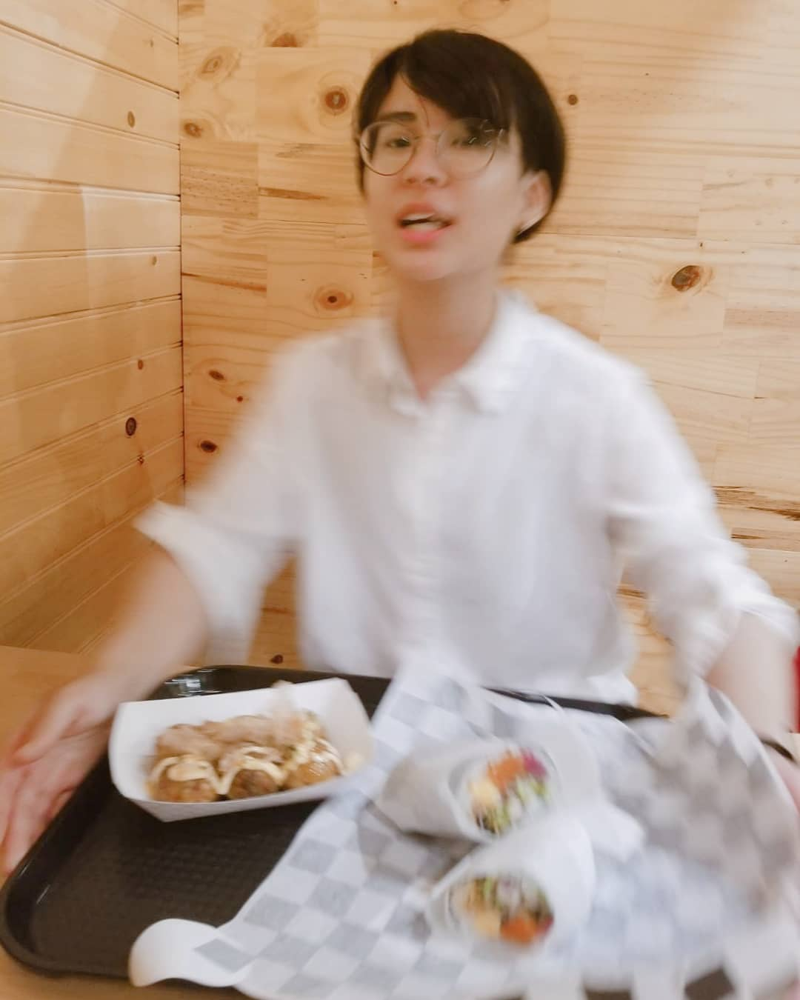

he/him
A newborn on GitHub. Find me here!
I graduated from Rutgers New Brunswick with a degree in ITI and a focus on game design. I have a cat-son
named Macaroni and an interest in interaction design.
Once I graduate from the Boot Camp, I plan to focus on front-end roles and eventually move into UX/UI
design.
In my leisure time I can be found ice skating, reading fantasy books, and geeking out over Nintendo
games and Dungeons & Dragons.
Fun fact: I restructured the entire CSS file to practice efficiency in styling.
(Picture taken as I shudder with delicious-meal anticipation at Okie Pokii, a cafe in Highland Park
specializing in Poke and Sushi Burritos. Try it out! I swear I'm not sponsored!!)